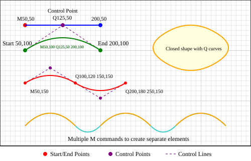

Courbes de Bezier
Explorez les courbes cubiques et quadratiques de maniere interactive
Glissez les points de controle pour modifier la courbe !
Courbe quadratique (Q)
Definie par un point de depart, un point de controle et un point d'arrivee. La courbe est attiree vers le point de controle.
Courbe cubique (C)
Definie par un point de depart, deux points de controle et un point d'arrivee. Offre plus de precision que la quadratique.
Une courbe ecrite par une IA
Voici la fleur en cloche d'une heather, dessinee par Claude. Toute la corolle est un seul <path> compose de commandes Q (quadratiques) chainees — exactement ce que tu as appris a manipuler plus haut.
M 50 60
Q 55 60 58 55
Q 60 50 58 45
Q 55 40 50 40
Q 45 40 42 45
Q 40 50 42 55
Q 45 60 50 60
Chaque Q = un point de controle + un point d'arrivee. Sept commandes, une fleur. C'est ca qui rend les SVGs si interessants pour l'IA : sortie courte, structure claire, modifiable a la main. Tu pourrais ouvrir ce fichier et changer une couleur, deplacer un petale, ou ajouter une etamine — sans regenerer quoi que ce soit. Voir d'autres exemples dans la galerie.
Aide-memoire Bezier
